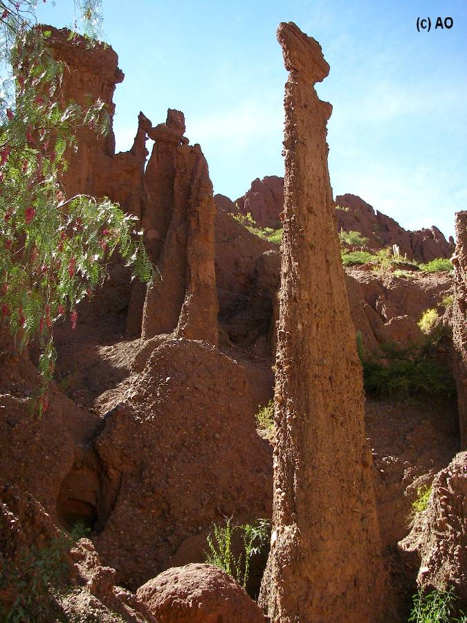
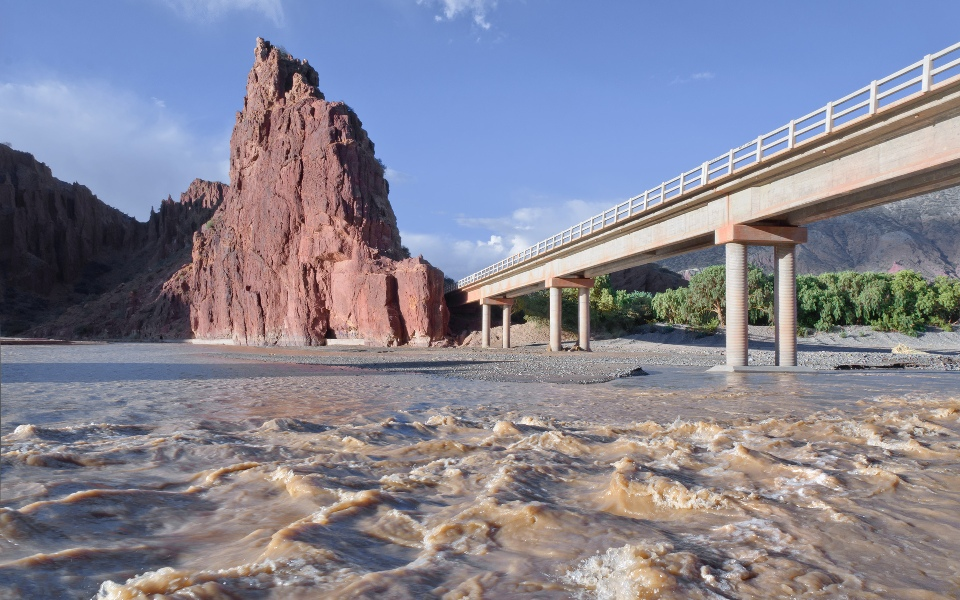
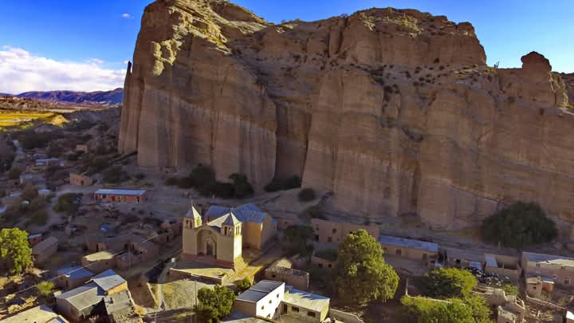
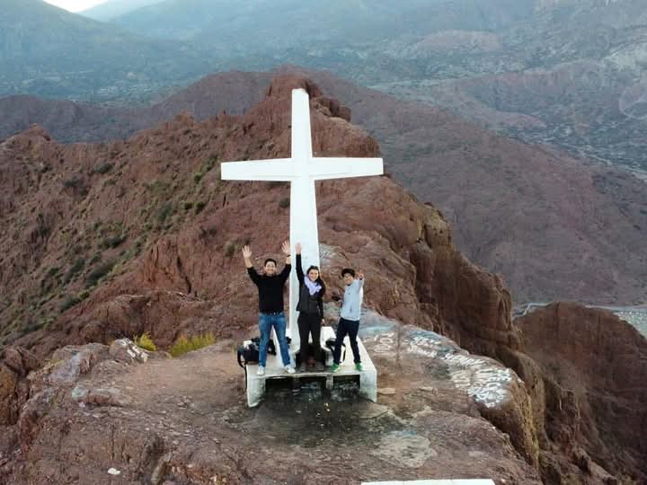
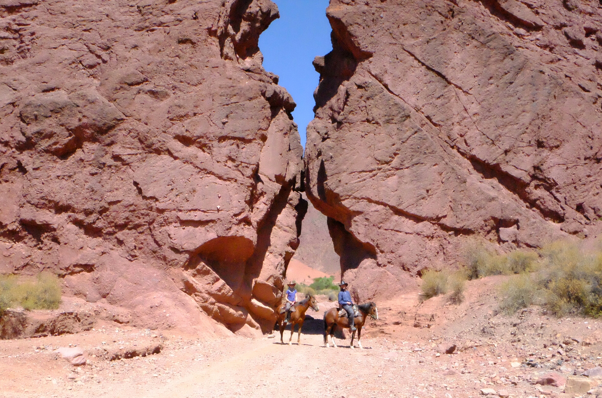
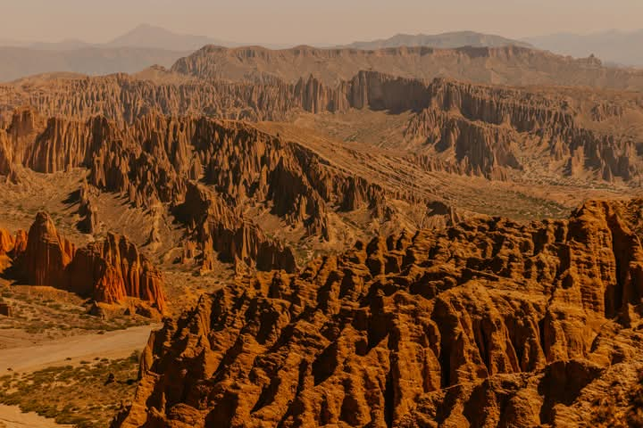
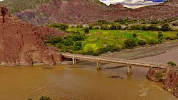
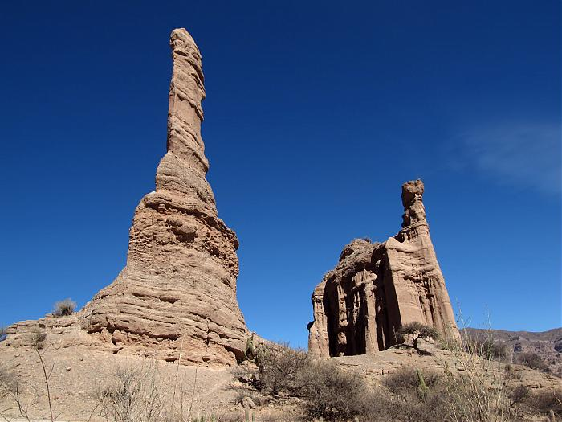

Sean ustedes bienvenidos a mi pagina web acerca del turismo en Tupiza
Los lugares turisticos en tupiza son fundamentales para el aprendizaje de nuestra cultura, historia y tradiciones lo que permite a nuestra poblacion y al exterior conocer nuestro pueblito encantado
Tupiza nuestro pueblito encantado
Te guiamos y recomendamoslugares turisticos que puede llegar a visitar en nuestra Tupiza, invitando a nuestros estudiantes de nuestra unidad educativa Andres de santa cruz.
¿Por que elegirnos?
Guias de turismo
Ubicacion geografica del lugar y conocimiento del tema
Origen y Epoca colonial
Te mostraremos el origen geologico como tambien leyendas locales de los lugares turisticos.
Imagenes de los lugares turisticos de Tupiza
Te presentaremos imagenes de buena calidad de cada lugar turistico de Tupiza
Lugares turisticos en la ciudad de Tupiza:
- Cañon del Duende
- Valle del los Machos
- Torrejon Punta
- Entre Rios
- Espicaya
- Mirador de la Cruz
- Puerta del Diablo
- El Sillari
- Torre Huayco
- Toroyoj
- La Poronga
Cañon del duende
Historia
El Cañón del Duende es un lugar de belleza natural e impresionante en la región de Tupiza, Bolivia. Este cañón se caracteriza por sus imponentes paredes de roca rojiza y la tranquilidad que ofrece, rodeado de leyendas que le otorgan un misticismo especial. Se ha convertido en un destino popular para aquellos que buscan disfrutar de la naturaleza, realizar caminatas y explorar formaciones geológicas únicas mientras se sumergen en el ambiente misterioso de la región Distancia de Tupiza: Se encuentra a aproximadamente 10 kilómetros al sureste de Tupiza, lo que facilita el acceso en excursiones de un día.Acceso: Se puede llegar al Cañón del Duende en vehículo hasta cierto punto y luego continuar a pie. Existen senderos para quienes desean una caminata de dificultad moderada, lo cual permite explorar mejor el entorno.El cañón está rodeado de grandes paredes de roca que alcanzan decenas de metros de altura. Estas rocas presentan capas sedimentarias visibles en tonos rojos, ocres y naranjas, moldeadas por la erosión del agua y el viento a lo largo de los años..
Leyenda del duende de Tupiza
El Duende Protector: La leyenda más conocida en este lugar cuenta que un duende, un pequeño ser mítico, habita el cañón y actúa como su guardián. Según las historias locales, el duende aparece para proteger el lugar de aquellos que intentan dañarlo o no muestran respeto. A veces, se dice que los excursionistas pueden escuchar risas o pasos en el cañón, que serían señales de la presencia de este ser.
Valle de los machos
El Valle de los Machos es una de las formaciones rocosas más icónicas de Tupiza, Bolivia. Este valle es famoso por sus formaciones rocosas verticales que, debido a su forma y disposición, son comparadas con figuras fálicas, lo que da origen a su nombre. El Valle de los Machos destaca por sus paisajes únicos y sus formaciones naturales, esculpidas por la erosión y el paso del tiempo, y se ha convertido en un lugar de visita obligada para los turistas que desean explorar los alrededores de Tupiza.
Historia
Distancia de Tupiza: El Valle de los Machos se encuentra aproximadamente a unos 5 km de Tupiza, por lo que es fácil llegar desde la ciudad en una excursión corta.Se puede acceder en vehículo hasta un punto cercano y luego continuar a pie para explorar las formaciones. Algunos visitantes optan por hacer el recorrido en bicicleta o a caballo, disfrutando de los paisajes circundantes en el trayecto.
Leyenda
Simbolismo de Fertilidad: Debido a la forma fálica de las rocas, el Valle de los Machos ha sido asociado con la fertilidad y la masculinidad. Para algunas personas, este lugar es considerado un símbolo de fuerza y vitalidad. Algunos locales cuentan que el valle tiene un “poder especial” y que las personas que lo visitan pueden recibir buena suerte y energía.

Torrejon Punta
Torrejón Punta es una destacada formación rocosa cerca de Tupiza, Bolivia, famosa por su estructura alargada que recuerda a una torre natural. Su nombre proviene de su forma, que parece una columna alta y estrecha que se eleva imponentemente en el paisaje montañoso y árido de la región. Esta peculiar formación se ha convertido en un atractivo para quienes buscan explorar los alrededores de Tupiza y disfrutar de las vistas únicas y el ambiente tranquilo del área.
Historia
Es otra de las impresionantes formaciones naturales que se encuentran en los alrededores de Tupiza.Se encuentra aproximadamente a 10km de Tupiza, siguiendo la misma ruta que lleva a otros lugares de interes como el valle de los machos Distancia de Tupiza: Torrejón Punta se encuentra aproximadamente a unos 7 km de Tupiza, lo que permite llegar a él en un recorrido de media hora en vehículo o mediante una caminata.
Leyenda
Simbolismo Natural: Aunque Torrejón Punta no tiene leyendas místicas como otros sitios cercanos, es considerado un emblema de resistencia natural. Se cree que debido a su peculiar forma y altura, este lugar representa la fuerza y la perdurabilidad de la naturaleza, y algunos visitantes lo ven como un símbolo de firmeza.Pero para los habitantes de la región, Torrejón Punta ha servido tradicionalmente como un punto de referencia y orientación en el vasto paisaje desértico de Tupiza. Su forma destacada lo hace fácilmente identificable desde lejos, y algunos viajeros locales lo usaban como guía para encontrar su camino..
Entre Rios
Historia
Entre Rios esta aproximadamente 30km al noreste de Tupiza siendo conocida por su verdor, a diferencia de las areas mas aridas de Tupiza. los rios Tupiza y San Juan del Oro se encuentra en esta region brindando vida a los valles y haciendo que el paisaje sea exuberante y lleno de vegetacion. Durante años esta zona ha sostenido a sus comunidades locales con sus recursos hidricos y ha sido una importante fuenta de agua potable para los cultivos.
Leyenda
La leyenda local cuenta que las aguas termales de Entre Rios tienen propiedades milagrosas y curativas. Se dice que, hace siglos, una anciana indigena que sufria de un mal incurable fue guiada por un sueño hasta las aguas termales. Al sumergirse en ellas, recobro su salud y volvio a su aldea rejuvenecida
Espicaya
Historia
Espicaya esta a unos 12 km al sur de Tupiza. esta rodeado de de montañas y cañones , el pueblo se encuentra en una zona de transicion entre el valle de Tupiza y la region montañosa de los andes esto le otorga un clima seco pero con areas verdes alimentadas por arroyos y pequeñas quebradas. suendo habitada desde epocas muy antiguas por pueblos indigenas quechuaspor lo cual varios habitantes de sus habitantes siguen manteniendo sus tradicion es y costumbres de este pueblo.
Leyenda
Una de las leyends mas famosas de Epicaya cuenta que en las montañas queb rodean al pueblo existe un tesoro inca escondido. Segun la tradicion oral, cuando los españoles llegaron a la zona, los incas escondieron sus riquezas en cuevas y cañones cercanos para evitar que caigan en manos de los conquistadores. Hasta el dia hoy algunos habitantes aseguran que ciertas luces o fogatas pueden verse en la montaña, y que estas señalan la ubicacion del tesoro.
mirador de la cruz
Historia
A pocos minutos del centro de Tupiza es accesible mediante una caminata corta. Este cerro coronado por una gran cruz es un punto de referencia espiritual para los pobladores. La cruz fue colocada hace decadas po la comunidad como simbolo de proteccion para la ciudad
Leyenda
Segun la tradicion subir al cerro de la cruz durante la semana santa otorgaa proteccion divina para el resto del año. Algun os habitantes aseguran haber visto luces o figuras misteriosas alrededor de la cruz en las noches de fiestas religiosas.
La puerta del diablo
Historia
La puerta del diablo esta a nos 7km al sureste de Tupiza. Muchos habitantes prefieren el senderismo, ya que l caminata hasta este sitio permite disfrutar de los paisajes montañosos y cañones circundantes.
Leyenda
Se habla de un guardian que protege la puerta del diablo, una figura invisible que impide el paso a quienes intentan entrar con malas intensiones.Algunos excursionistas afirman haver sentido que los obsevaba una energia extraña o presion en el ambiente como si alguien los observara mientras se acercaban al lugar.
Sillari
Historia
ubicado en Tupiza, es un lugar recomendado para los amantes de las geoformas y el trekking, donde a través del recorrido se pueden observar un sin fin de paisajes geomorfológicos. La travesía a pie es de aprox. 3-4 horas y también puedes ir a caballo.
Leyenda
Algunas personas aseguran que ciertas formaciones rocosas parecen figuras humanaso de animaleslo que alimenta historias de que estas formas rpresentan antiguos espiritus petrificados.

Torre huayco
Historia
Distancia de Tupiza: Torre Huayco se encuentra aproximadamente a unos 10 km de Tupiza, lo cual lo hace accesible para una excursión de un día desde la ciudad.Geografía: Ubicado en una región montañosa y árida, Torre Huayco presenta formaciones rocosas verticales que se elevan hacia el cielo como grandes pilares naturales, similares a torres o agujas. Las rocas en Torre Huayco están formadas por arenisca y arcilla, que han sido esculpidas por la erosión del viento y el agua, creando estructuras que asemejan torres y columnas naturales. Estas formaciones pueden alcanzar alturas de varios metros y están dispuestas en grupos, creando un “bosque” de piedra.
Leyenda
La Leyenda de las Torres Encantadas: Una de las leyendas locales cuenta que las torres de Torre Huayco son en realidad antiguos espíritus de guerreros que protegen la región. Según esta historia, en tiempos antiguos, un grupo de guerreros defendió estas tierras de invasores y, al fallecer, sus espíritus fueron inmortalizados en forma de piedras para seguir vigilando la región eternamente.
Toroyoj
Historia
Distancia de Tupiza: Toroyoj se encuentra a unos 10 km de Tupiza, aproximadamente a 30 minutos en auto, lo cual lo hace accesible para excursiones de medio día o de día completo.: El paisaje está compuesto por cañones y acantilados de roca rojiza, que se elevan abruptamente, formando paredes de gran altura y con texturas llamativas. El terreno es seco y árido, lo cual crea un ambiente de desolación y misterio.
Leyenda
: Según una de las leyendas locales, hace siglos existió un toro mágico que habitaba la zona de Toroyoj. Este toro, de tamaño enorme y con cuernos brillantes, era temido por los habitantes porque se decía que aparecía de noche para proteger el lugar. Algunos creen que aún se puede ver su sombra en las noches de luna llena, o escuchar los sonidos de sus pasos entre las paredes de roca..
La poronga
Historia
Distancia de Tupiza: La Poronga se encuentra aproximadamente a unos 7 km de Tupiza, lo que permite acceder a ella fácilmente en una excursión de medio día desde la ciudad. La Poronga es una formación rocosa peculiar cerca de Tupiza, Bolivia, y debe su nombre a su forma característica, que recuerda a un falo o torre vertical. Esta formación es un punto destacado entre los paisajes de la región, y su particular forma atrae tanto a turistas como a aventureros que exploran los alrededores de Tupiza. Además de ser un lugar curioso y llamativo, La Poronga ofrece una oportunidad para apreciar el poder de la naturaleza y la erosión a lo largo del tiempo. A continuación, te ofrezco una descripción detallada sobre su ubicación, características, y atractivos turísticos.
Leyenda
Aunque La Poronga no tiene tantas leyendas como otros lugares cercanos, su forma ha inspirado a los habitantes a considerarla como un símbolo de fertilidad y vida. Algunos incluso la ven como un talismán de buena suerte para las parejas que desean formar una familia.